加工範囲
この寸法の中なら、
たいてい削れます。
受けられる仕事の範囲を、いちばん先に書いておきます。判断が早いほうがお互いに助かるからです。
加工径
- 長さ100mm まで
- 丸棒材（ENC-3BC）42φ まで
- 丸棒材（BNC-75）35φ まで
- 自動機7台
社内でできること
- 自動旋盤による荒加工
- NC旋盤による仕上げ加工
- 転造ねじ（10t 転造盤）
- 穴あけ・タッピング
- 投影機による寸法検査
協力工場でできること
- 焼き入れ（熱処理）
- 研磨加工
切削から熱処理・研磨まで、まとめてご相談いただけます。
加工事例
スケールと一緒に、
撮ってあります。
部品の写真だけでは大きさが伝わりません。だから当社の製品写真には、ものさしが写っています。ご自分の図面と見比べてみてください。
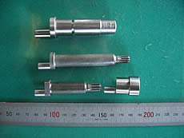
段付きシャフト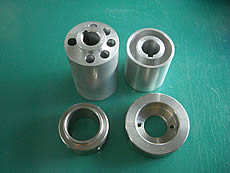
内径加工品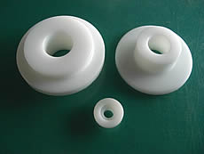
樹脂部品- 継手・ジョイント類
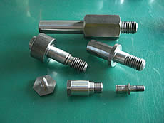
ねじ・ボルト類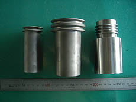
スリーブ・筒物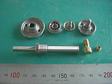
小径精密部品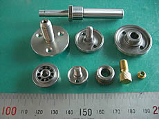
フランジ付き小物
主な加工品目：ベアリング、ギアブランク、エア機器部品、ツール部品、その他の精密部品加工。
設備
機械の顔ぶれ
4人でこれだけの台数を回しています。段取りを分けられるので、少量多品種でも止まりません。
| 設備名 | 型式 | 製造所 | 台数 |
|---|---|---|---|
| NC旋盤 | EX-10 6インチスクロール ロボット付 | 高松機械 | 2台 |
| EM-1 6インチスクロール | 高松機械 | 1台 | |
| 単能機 | ENC-3BC 42丸棒材使用可・8インチスクロール | ミヤノ | 1台 |
| BNC-75 35丸棒材使用可 | ミヤノ | 1台 | |
| 3BC カムレス油圧自動機 | ミヤノ | 2台 | |
| 各種自動機 | 加工径 5.0φ〜100.0φ／長さ 100mm | — | 7台 |
| 転造盤 | 10t（ネジ切り盤） | — | — |
| ボール盤・タッピング | — | — | 多数 |
| 検査器 | 投影機 PJ-H-300F | ミツトヨ | 1台 |
| 偏芯専用機 | ミヤノ34型／EX-10 ローダー付 | — | — |
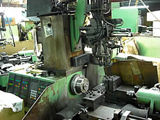
加工現場 01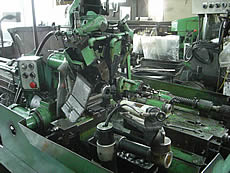
加工現場 02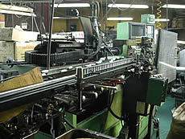
加工現場 03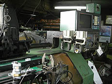
加工現場 04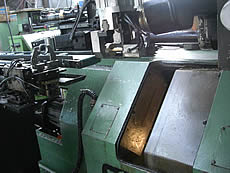
加工現場 05
依頼の流れ
電話一本から
窓口は代表の山中です。取次ぎがないので、そのまま加工の話ができます。
- 1
お電話ください
048-456-2733。まず、つくりたいものと数量をお聞かせください。
- 2
図面を送っていただく
FAX 048-456-0684 へ。寸法と材質、公差が分かれば見積もれます。
- 3
可否とお見積り
社内で削れるか、協力工場を挟むか、率直にお伝えします。難しい場合は理由もお話しします。
- 4
加工・検査・納品
投影機で寸法を確認してから出します。
主要取引先
9社と、長く。
ベアリング、空気機器、精密機器。4人の工場ですが、続けていただいているお取引先があります。
- 株式会社日本特殊ベアリング
- エスピーエアー株式会社
- 株式会社藤間精機
- 昭和工業株式会社
- 株式会社スバック
- 日本ミンコ株式会社
- 大同精密工業株式会社
- 株式会社シンセイテクノ
- 株式会社MIKAMI
よくあるご質問
はじめての方へ
どのくらいの大きさまで加工できますか。
各種自動機で加工径 5.0φ〜100.0φ、長さ100mmまでが標準です。丸棒材はミヤノ ENC-3BC が42φまで、BNC-75 が35φまで対応します。形状によって可否が変わりますので、図面でご相談ください。
荒加工だけ、仕上げだけの依頼はできますか。
できます。自動盤による低コストの荒加工からNC旋盤での仕上げ加工まで社内で対応しているため、工程の一部だけをお受けすることも可能です。
焼き入れや研磨もお願いできますか。
協力工場にて対応可能です。切削から熱処理・研磨まで、まとめてご相談いただけます。
ねじ加工はできますか。
転造盤（10t・ネジ切り盤）とタッピング設備を保有しています。転造によるねじ加工に対応します。
少ない数量でも受けてもらえますか。
単能機と自動機を分けて段取りできるため、少量多品種に向いた工場です。数量をお知らせいただければ、その数に合った機械でお見積りします。
会社概要
有限会社 山一精機
- 会社名
- 有限会社 山一精機
- 代表者
- 代表取締役 山中 一
取締役 山中 道子 - 創業
- 昭和40年12月20日 山中製作所 設立
昭和55年4月1日 有限会社 山一精機 設立 - 資本金
- 300万円
- 所在地
- 〒351-0001 埼玉県朝霞市上内間木1049-1
- 電話・FAX
- Tel. 048-456-2733 ／ Fax. 048-456-0684
- 業務内容
- ベアリング、ギアブランク、エア、ツール部品、その他 精密部品加工
- 従業員数
- 4名（男性2名・女性2名）
- 担当者
- 山中
アクセス
朝霞市上内間木
- お車の場合
国道17号バイパスから田島交差点を、県道266号線を志木方面へ。
- 電車の場合
志木駅より浦和駅西口行バスを使用、秋ヶ瀬橋下車 徒歩3分。